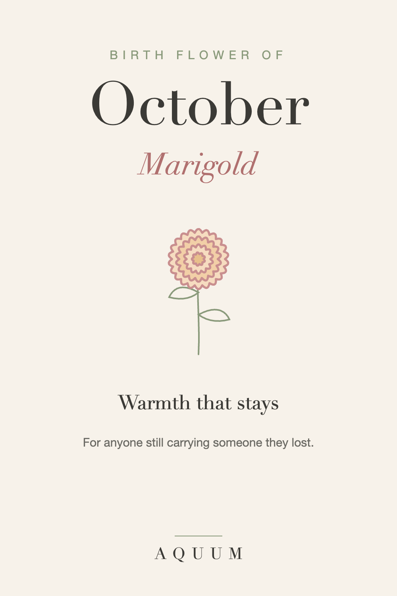

October Birth Flower: Marigold Meaning and Gift Ideas
2026-09-30
Written by the team behind Aquum, a small birth flower gift shop. How we make money.

October has two birth flowers: the marigold, which most lists name first, and the cosmos. Both bloom late in the season, when most gardens are winding down, and both carry warm, steady meanings.
What the marigold means
The marigold stands for warmth and love that stays. Its color, anywhere from gold to deep orange, has made it a symbol of the sun and of lasting affection in many cultures.
It's also a flower of remembrance. In Mexico, marigolds (cempasúchil) fill the altars of Día de Muertos at the start of November, and their scent and color are said to guide loved ones home. That connection gives the October birth flower a depth most flowers don't have.
A marigold doesn't say "happy birthday" so much as "I'm glad you're here, and I'll keep you close."
The cosmos, October's second flower
The cosmos means order, harmony and peace. It's lighter and more playful than the marigold, a good choice if the person you're shopping for would find the remembrance meaning too heavy for a birthday.
Who the marigold suits
- Someone born in October who loves warm, rich colors
- A friend or relative who is missing someone they lost
- Anyone you want to tell, quietly, that they matter to you
October birth flower gift ideas
- Something they'll wear or use every day. A marigold shirt, tote or mug keeps the meaning in sight long after fresh flowers fade.
- Marigold seeds for spring. They're among the easiest flowers to grow, and planting them is a gift that comes back.
- A handwritten card with the meaning. "Warmth and love that stays" is a sentence worth giving on its own.
If you want to talk about loss, the marigold lets you do it gently. If you'd rather keep things light, choose the cosmos.
Shopping for an October birthday? See our October birthday gift ideas.